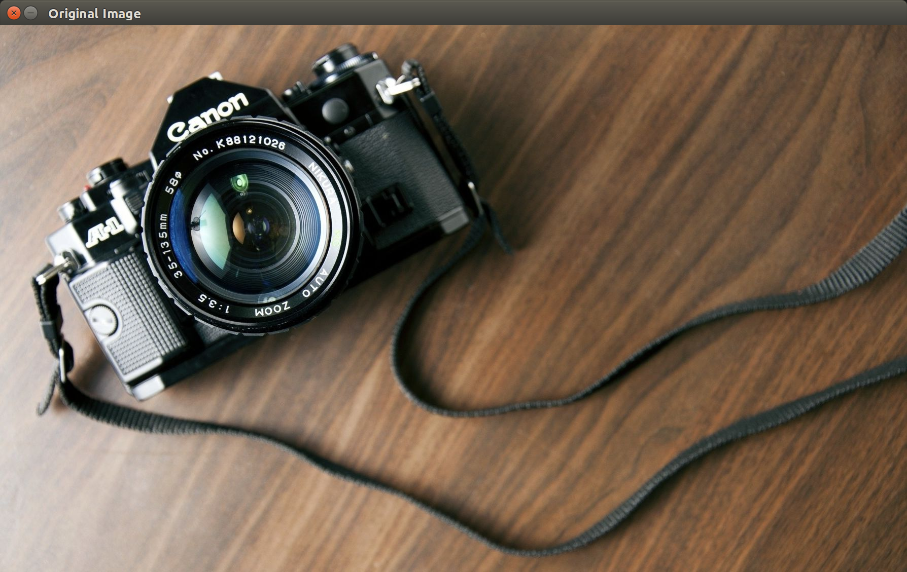
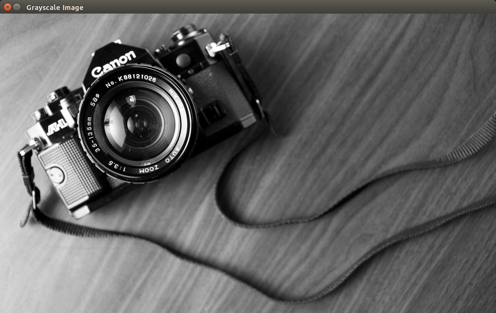
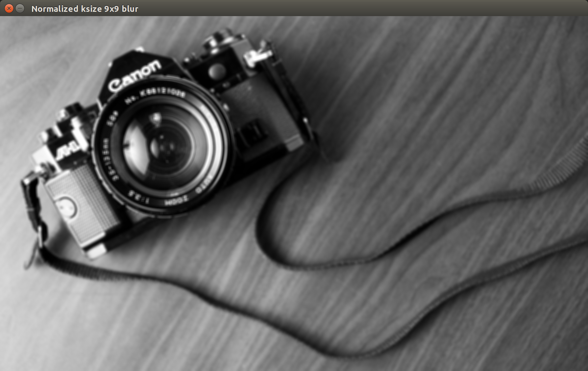
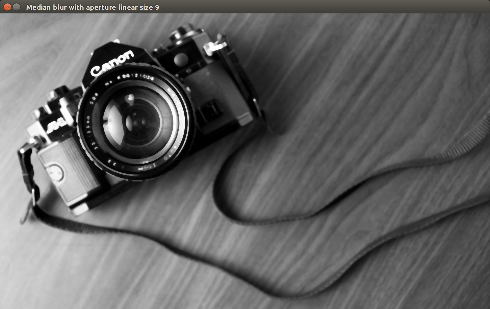
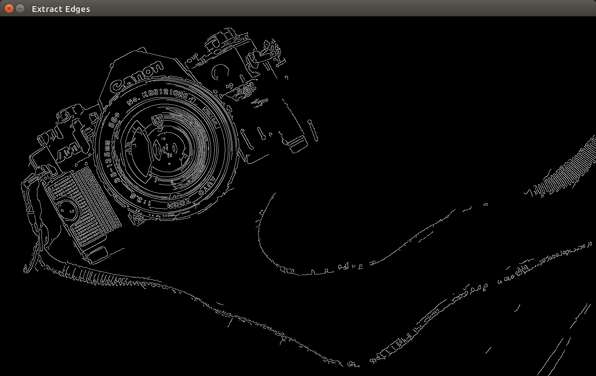

Creating sketch like video live-feeding from the webcam.
The project is broken down into four sections.
Part I: Convert image to grayscale
Part II: Blur the image
Part III: Extract Edges
Part IV: Invert binarization of the image
Part I: Convert image to grayscale
Since our final purpose is to create sketch like images, we can extract only the important imformation reduce the complexity of an image. Information is stored in 3D for an colored image (values for Red, Green, and Blue) while a gray scale image requires only 1D.

Original Image

Gray scale image
Part II: Blur the image
To get the contours of an image, it is best to first get rid of noises in the image. This is achieved by blurring the gray scaled image.
In OpenCV, there are 4 blurring methods (or smoothing according to OpenCV documendation): blur, GaussianBlur, medianBlur, and bilateralFilter.
The effects of the four methods are shown below.
Original clear grayscale image

Normalized Blur with kernel size 9x9
Gaussian Blur with kernel size 9x9

Median Blur with aperature linear size 9
If you look at the words around the camera lens, only Gaussian blur seems readable. If we want to make a sketch like image in the end, it is better if we can still read the details clearly, hence, let's choose Gaussian blur for the rest of the project.
Part III: Extract Edges
OpenCV has ___ ways of extracting edges. Notice how the black and white part of the image is reversed, we will have to invert the colors back later in Part IV.

Canny Extraction
Part IV: Invert Binarization of the Image
As mentioned in Part III, we need to flip the black and white of the image.